Elementalist spell effects (19 October)
The Elementalist commands Fire, Wind, Water and Earth. Most mages know one or two elements; a third is rarer and a fourth rarer still. Each element has five spells: a free bolt, a burst, a spell that shapes the ground, a utility spell and an advanced form (white flame, lightning, ice and crystal). Two shared spells and twelve combos complete the set. Every effect is built from runtime meshes, with no particle system, and follows the battle clock.
Each group had four independent critic passes. None reached the 8/10 bar, so all are logged as unfinished, with their faults listed on the wiki for a later polish pass. The number after each name is its last critic score. These are Editor renders in the dark dungeon room, with a capsule standing in for the mage, Serelle as the ally and a Risen as the enemy. They are not in the game yet.
Fire
Flame burns the undead, so fire users are revered. Tongues of flame cool to dark red at the tip, with soot, embers and a scorch that fades.


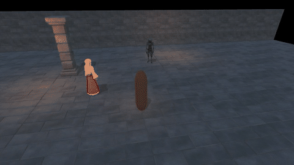

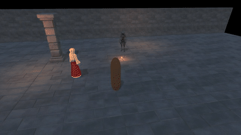

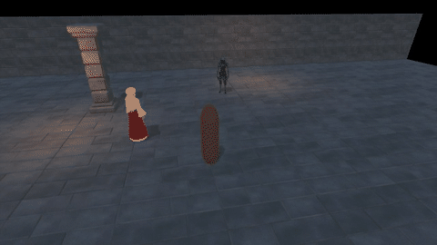

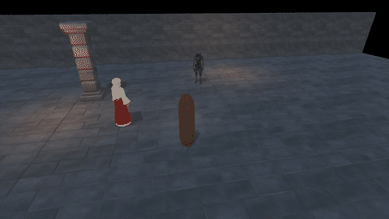
Wind
Wind is shown by what it carries: grey haze, tan dust and grit, and leaves. Lightning is the advanced form.


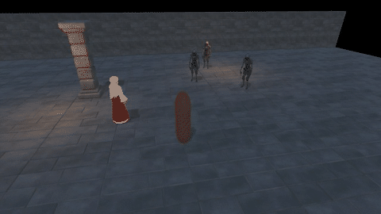


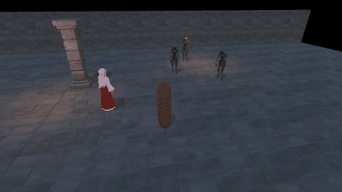
Water
Blue bodies of water with spray, foam and mist, and wet patches that reflect the room. Ice is the advanced form.


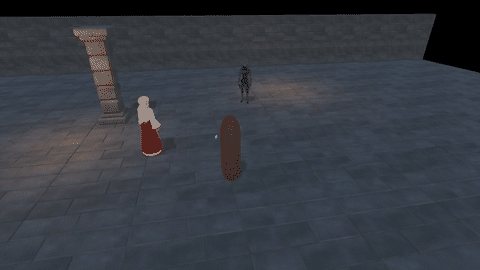
Earth
Earth is real stone: low-poly rock and crystal meshes lit by the room and casting shadows, with dust and cracks.


Shared spells
Convergence and Elemental Sanctum, shown as a Fire and Water mage casts them.

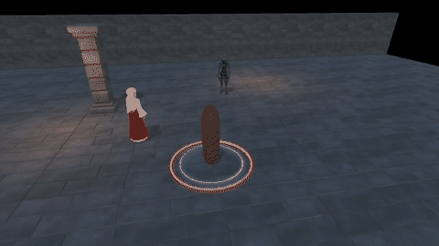

Combos
Two conditions meeting on one target set off a combo, whoever laid them: two mages, the room, or friendly fire. Six come from pairs of elements, five from an element's advanced form, and Snuffed is the clash of fire and frost.

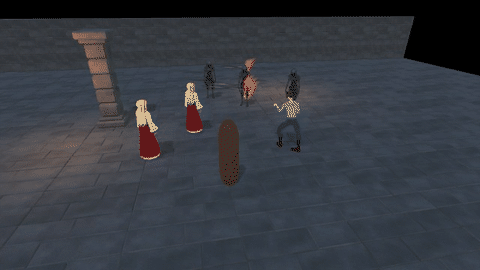

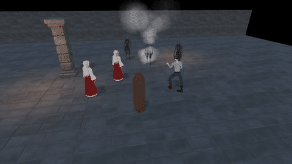

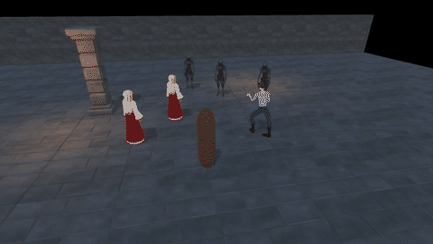

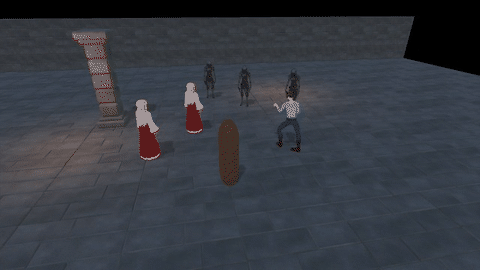


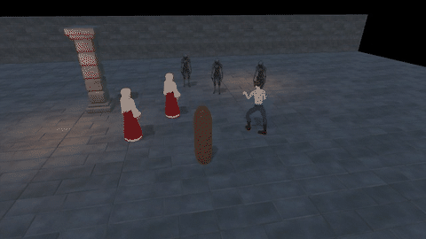


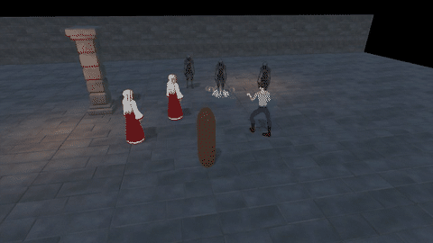

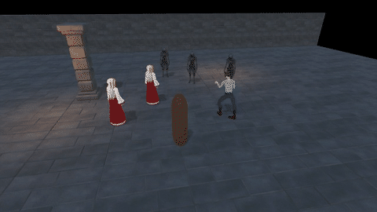

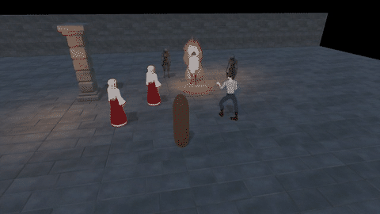
- Not yet done: wiring the spells into the game, the Elementalist's own model and cast animations, and rebuilds for White Flame, Stoneskin, Magma and Mire.
Blood Mage spell effects (18 October)
The Blood Mage pays for spells with health. The first cast cuts the palm; the blood falls and runs into a runic circle around the mage, and every spell rises out of it. Each spell writes its own runes into the ring. While a spell works the blood is dark and wet; it dries to brown stains only after the spell is done. Everything is drawn from runtime meshes on one shader, with no particle system, and follows the battle clock.
Each spell had four independent critic passes. None reached the 8/10 bar, and all five are accepted for now; their remaining issues are listed on the wiki for a later polish pass. These are Editor renders, with a capsule standing in for the mage, Serelle as the ally and a Risen as the enemy. They are not in the game yet.
Sanguine Lance: accepted for now at 7.4
Streams of blood rise out of the circle into an orb in front of the casting hand. The orb stretches into a lance, flies, and shatters on the target with a spray and a splash that dries.

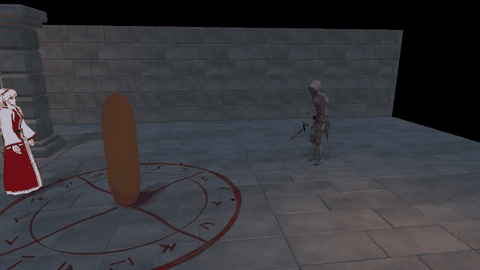
Crimson Drain: accepted for now at 7.7
Wounds open on the enemy and a stream of its blood is torn out, runs low over the floor into the circle and climbs into the mage's palm. Transfusion sends it on from the enemy to the most hurt ally instead.


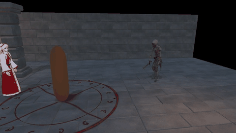
Hemorrhage: accepted for now at 7.4
A thin needle of blood leaves the circle and cuts the enemy. On each of the six bleed ticks the wound spurts; the drops feed a pool under the enemy that dries after the bleed ends.

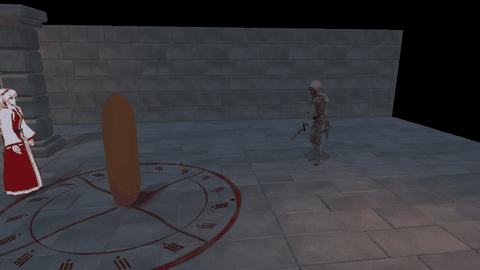

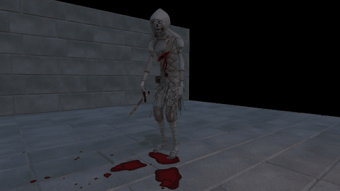
Sanguine Grasp: accepted for now at 7.4
A glob of blood rises on a column from the circle and is lobbed to the enemy's feet. It splashes, a ring of claw runes spreads out from the enemy, and four hands rise from the pool to grip its legs for the 1.5-second stagger, then slump back in.


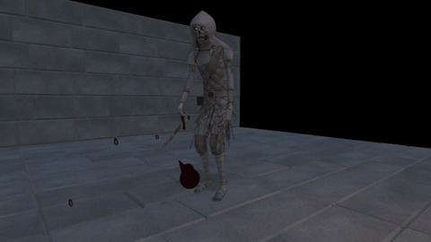
Crimson Aegis: accepted for now at 7.7
Three streams lift off the circle and spiral round the mage. Cast on an ally, they first run over the floor to her. They form a tall shell of dark blood glass. Hits crack it on the attacker's side, and breaking it shatters it into plates that splash and dry. Left unbroken, it sags into a pool after six seconds.

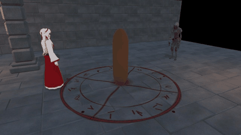

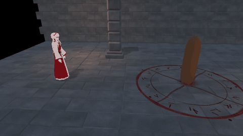

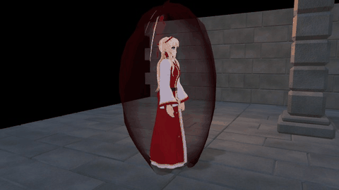
- All five spells pass the review scene's automated checks (161/161): visible in both rooms from both cameras, and nothing left behind once they end.
- Not yet done: wiring the spells into the game, the Blood Mage's own model in the frames, and the talent effects.
Priest Spell Effects
Every Priest spell, redrawn on 17 October after research into how Final Fantasy VII Remake builds its spells. One new shader runs original noise through each layer of light and burns it away with a hot edge; tubes of light soften toward their outlines; everything follows the battle clock, so a pause freezes a spell exactly. These replaced the earlier effects in the game on 17 October. Smite was approved by independent critics at 8.1 after three passes, and the rest of the kit at 8.1 after four. The clips are from the review build: Serelle stands in as the ally, the Risen as the enemy.
Strikes

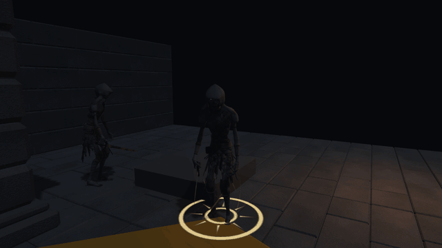

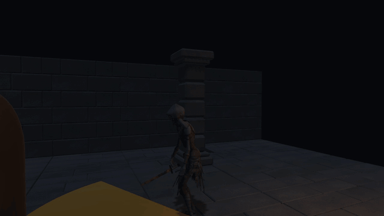
Heals

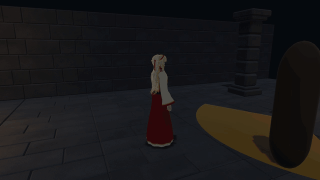


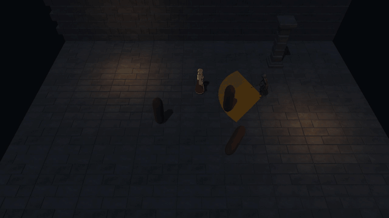

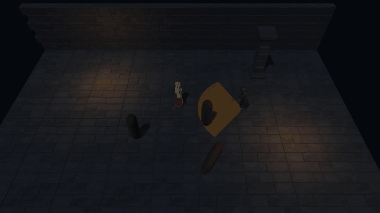
Barriers

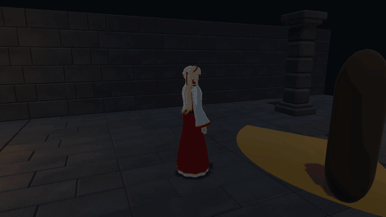


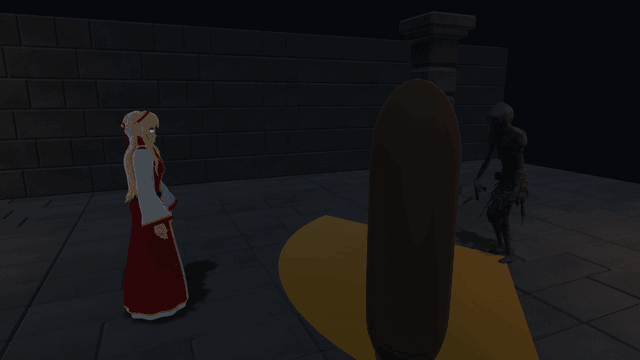

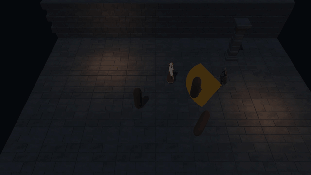
Goddess' Mercy and broken prayers


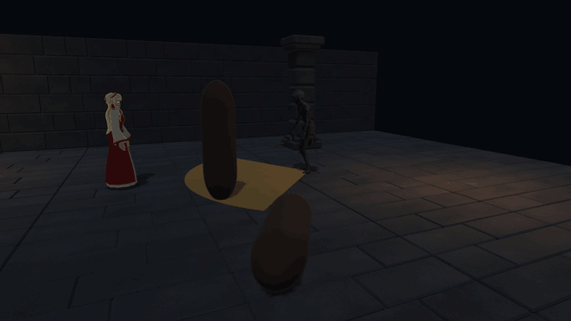

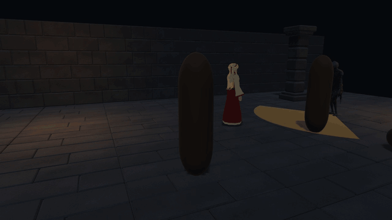
- In the game since 17 October. The Warrior effects are unchanged.
- Every automated check passes: the review build (Smite 18/18 and 16/16, the kit 20/20 and 14/14) and the game's Priest and Warrior ability runs (429/429 and 437/437). The enemy's amber warning stays readable under every spell.
- Small things the last critics left open: the first frame of a barrier break is a little milky, and the mirror's recoil whitens the enemy's armour up close.
EarlierAbilities in the game
The Warrior and Priest abilities now play in the connected game. At the guild desk you choose your class and spend 3 skill points; your companion takes the other class. Training and the dungeon use the abilities, with the approved spell effects, an ability bar and saved faith. Waiting for your review; nobody has played it by hand yet.
| Key | Warrior | Priest |
|---|---|---|
| J / left mouse | Strike (the same sword swing) | Smite |
| Hold right mouse | Guard | |
| 1 | Shield Bash | Heal the ally under the cursor, or whoever is most hurt |
| 2 | Taunt | Barrier on the ally under the cursor, or whoever the enemy is after |
| 3 / 4 | Tier-3 ability later | Goddess' Mercy / tier-3 spell later |


- All checks pass in the Unity Editor and in a separate Windows player: Warrior 436, Priest 429 and old-save re-registration 76 checks, plus Codex's journey (755) and travel (1,403) checks. The main game build was rebuilt with it and passes the same checks, so it is ready to play.
- Faith is saved; a paid camp rest or returning to the guild refills it. How else it should come back (potions, regeneration, rest) is on your list of open decisions.
- Old saves keep their seals, lessons and contracts but must register a class again at the desk.
- Placeholders: the bodies don't animate casts, the priest's stand-in still carries a sword, and the companion is still called Rowan.